screenshot_0 · full
[1920, 990] → [1920, 990] · 保留像素 100.0% · 场景 0


坐标：[0, 0, 1920, 990] · 原因：first_screenshot
算法版本：experimental_theme_aware_per_step_v2。仅用于预览，生成流程未修改。
返回任务总览 · 查看全部步骤拼图 · 查看算法判断 JSON
左侧为原图预览和选区（绿色：裁剪；蓝色：保留整图），右侧为此算法的输出预览；实验版尚未用于生成。点击图片查看原尺寸；预览自动缩放。像素减少比例不等于 token 减少比例。
[1920, 990] → [1920, 990] · 保留像素 100.0% · 场景 0
坐标：[0, 0, 1920, 990] · 原因：first_screenshot
[1920, 990] → [1920, 990] · 保留像素 100.0% · 场景 0
算法输出预览
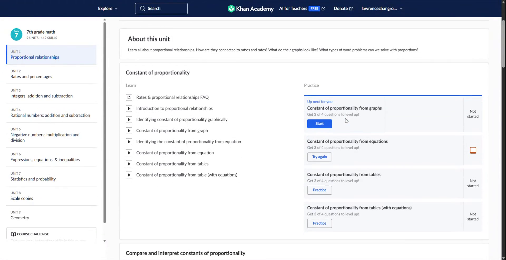
坐标：[0, 0, 1920, 990] · 原因：changes_spread_keep_full
[1920, 990] → [1920, 990] · 保留像素 100.0% · 场景 1
坐标：[0, 0, 1920, 990] · 原因：large_visual_change
[1920, 990] → [1920, 990] · 保留像素 100.0% · 场景 2
算法输出预览
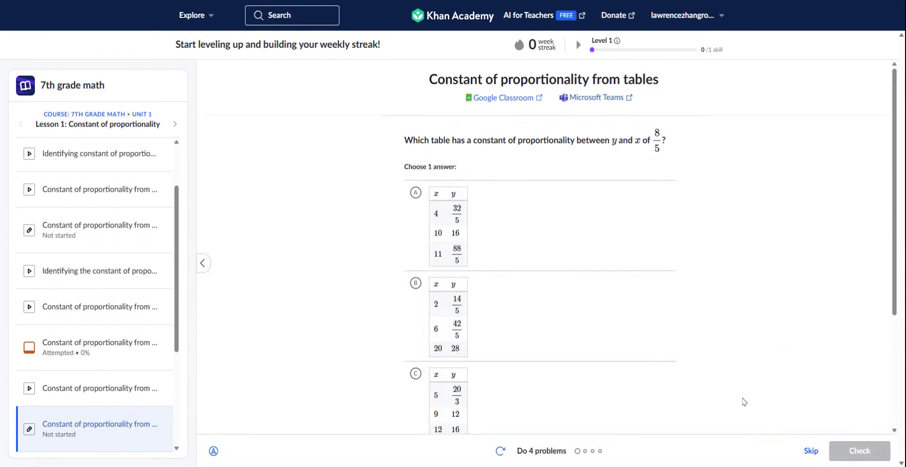
坐标：[0, 0, 1920, 990] · 原因：large_visual_change
[1920, 990] → [1920, 990] · 保留像素 100.0% · 场景 2
坐标：[0, 0, 1920, 990] · 原因：changes_spread_keep_full
[1920, 990] → [1088, 878] · 保留像素 50.3% · 场景 2
算法输出预览
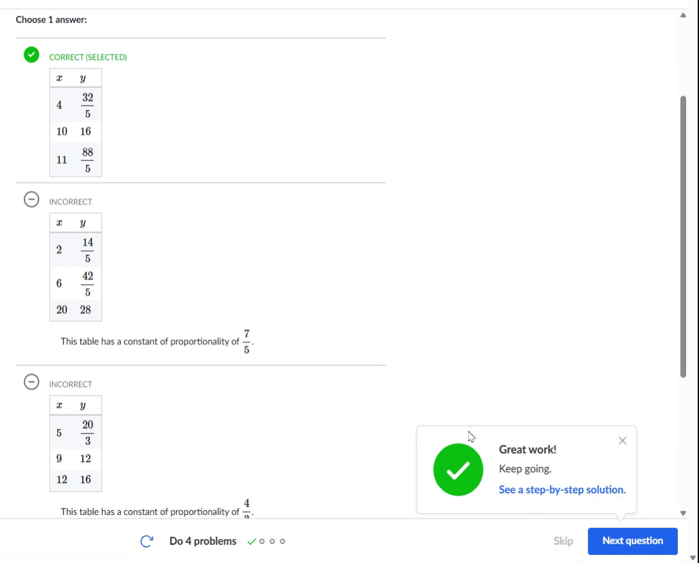
坐标：[832, 112, 1920, 990] · 原因：localized_change
[1920, 990] → [1088, 844] · 保留像素 48.3% · 场景 2
算法输出预览
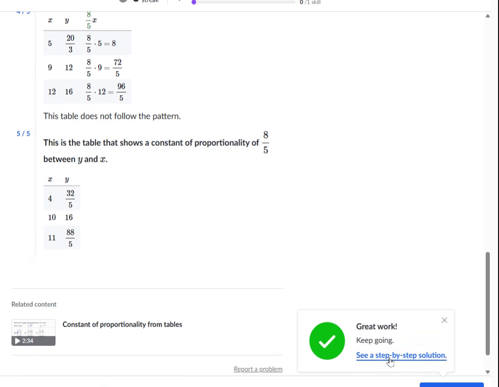
坐标：[832, 101, 1920, 945] · 原因：localized_change
[1920, 990] → [1920, 990] · 保留像素 100.0% · 场景 2
算法输出预览
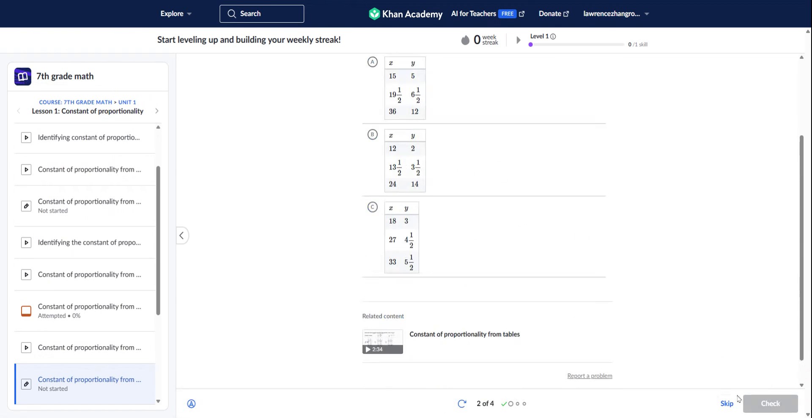
坐标：[0, 0, 1920, 990] · 原因：changes_spread_keep_full
[1920, 990] → [1920, 990] · 保留像素 100.0% · 场景 2
坐标：[0, 0, 1920, 990] · 原因：changes_spread_keep_full
[1920, 990] → [1076, 675] · 保留像素 38.2% · 场景 2
坐标：[840, 315, 1916, 990] · 原因：localized_change
[1920, 990] → [1088, 889] · 保留像素 50.9% · 场景 2
算法输出预览
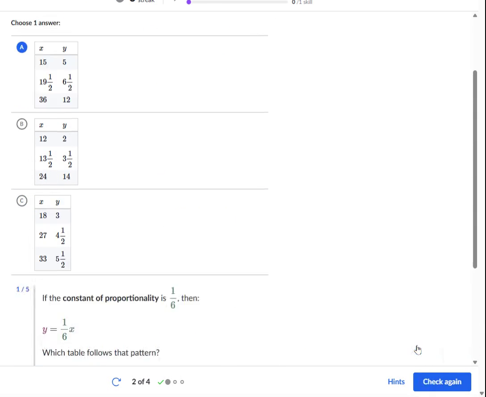
坐标：[832, 101, 1920, 990] · 原因：localized_change
[1920, 990] → [1088, 883] · 保留像素 50.5% · 场景 2
算法输出预览
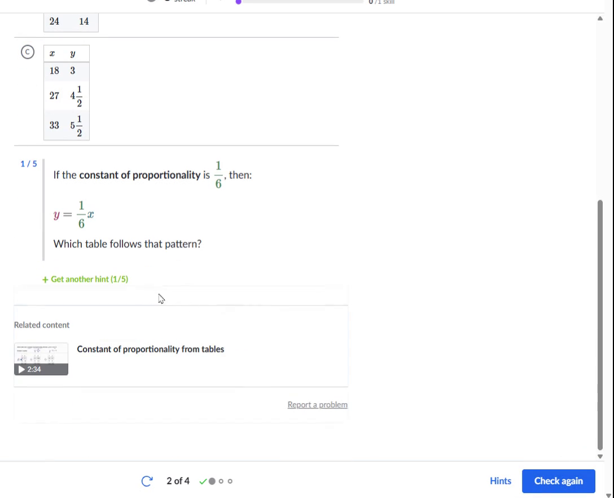
坐标：[832, 103, 1920, 986] · 原因：localized_change
[1920, 990] → [1088, 574] · 保留像素 32.9% · 场景 2
原图与选区
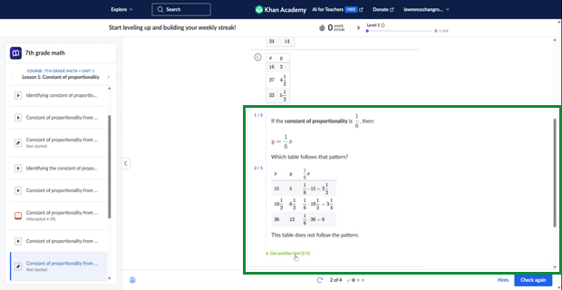
算法输出预览
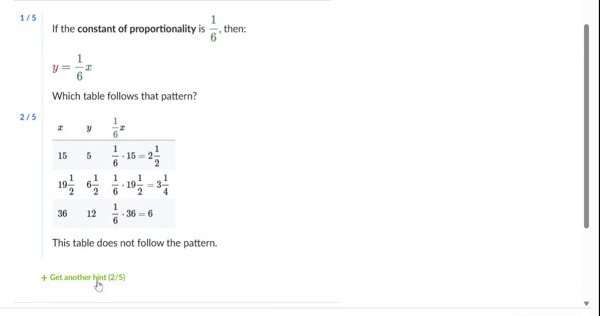
坐标：[832, 361, 1920, 935] · 原因：localized_change
[1920, 990] → [1088, 836] · 保留像素 47.9% · 场景 2
算法输出预览
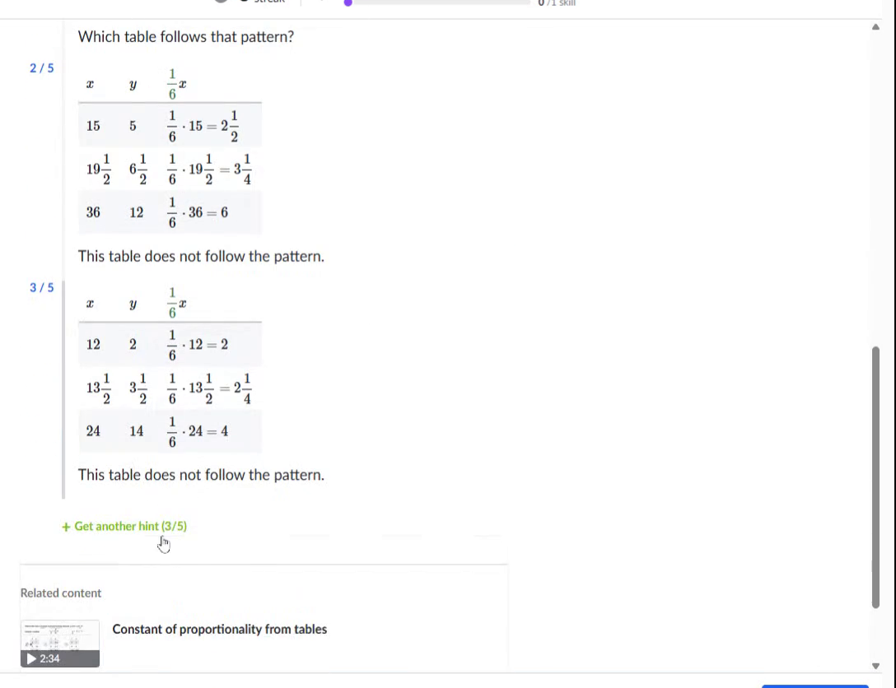
坐标：[832, 103, 1920, 939] · 原因：localized_change
[1920, 990] → [1088, 833] · 保留像素 47.7% · 场景 2
算法输出预览
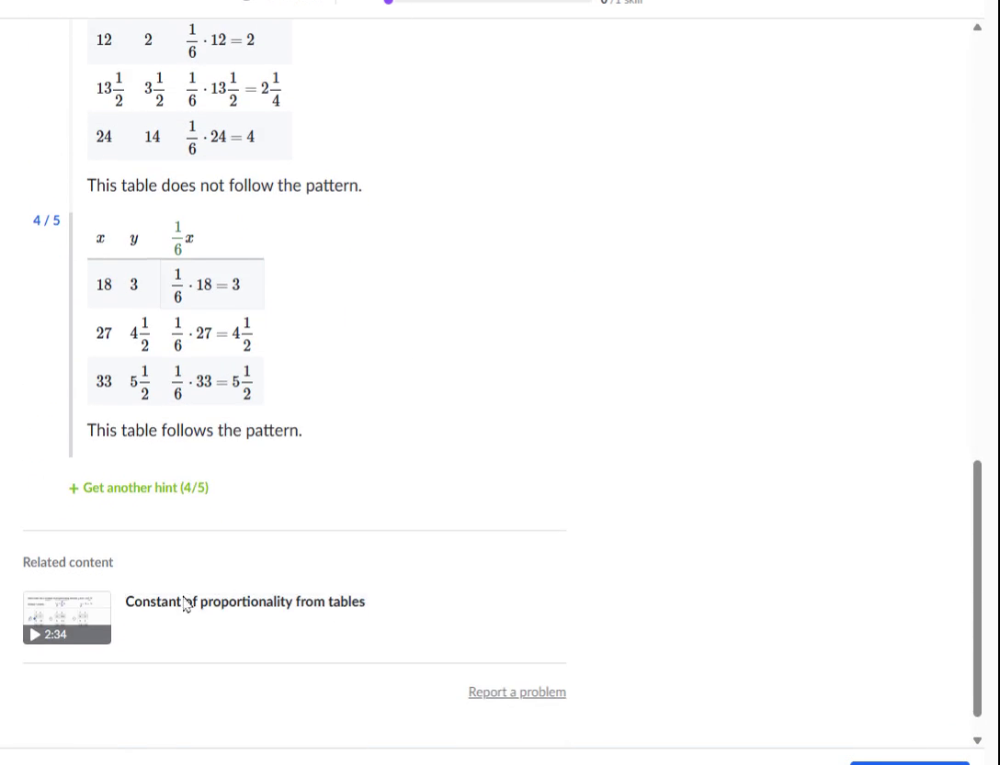
坐标：[832, 106, 1920, 939] · 原因：localized_change
[1920, 990] → [1088, 824] · 保留像素 47.2% · 场景 2
算法输出预览
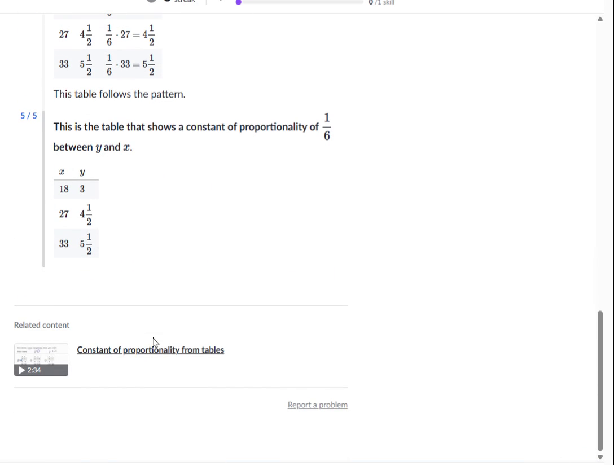
坐标：[832, 102, 1920, 926] · 原因：localized_change